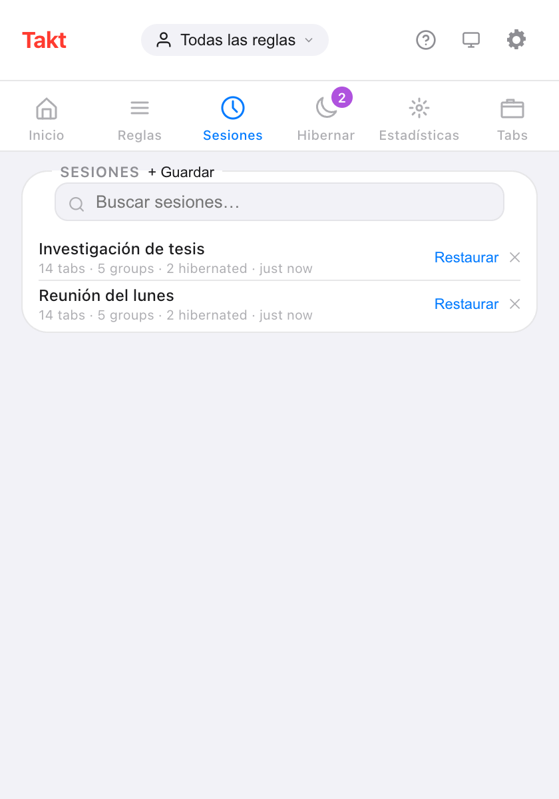
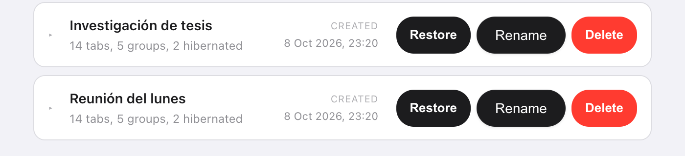

Respuesta corta: en el popup de Takt, abre Sesiones, haz clic en + Guardar, ponle un nombre y elige Esta ventana o Todas las ventanas. Más tarde, haz clic en Restaurar para recuperar las mismas pestañas, dentro de los mismos grupos con nombre y color.
- Guarda todas las pestañas, todos los grupos (nombre, color, estado plegado), las pestañas sueltas y tu lista de Hibernar.
- Restaura en una ventana nueva o sustituye la actual.
- Hasta 50 sesiones, guardadas en tu equipo. Premium
¿Por qué no basta con «Continuar donde lo dejaste» de Chrome?
Para una sola tarea, sí basta. Actívalo y Chrome vuelve a abrir las pestañas de tu última sesión al iniciarse. Si es todo lo que necesitas, no te hace falta ninguna extensión.
El problema llega cuando cambias de un trabajo a otro. Las pestañas de tu tesis, las de la reunión del lunes y las del viaje que estás planeando no pueden ser todas "la última sesión". Cierra la ventana de la tesis para hacer sitio a la reunión, y las pestañas de la tesis desaparecen de esa lista.
Una sesión con nombre es un marcador para todo un espacio de trabajo. Cierras la ventana sin preocuparte, porque puedes recuperarla por su nombre.
¿Cómo guardo una sesión de pestañas?
- Instala Takt desde Chrome Web Store.
- Abre el popup y ve al panel Sesiones.
- Haz clic en + Guardar y escribe un nombre de hasta 60 caracteres. Los nombres no se pueden repetir.
- Elige Esta ventana (la opción predeterminada) o Todas las ventanas y haz clic en Guardar.

¿Qué guarda una sesión?
| Se guarda | Detalles |
|---|---|
| Pestañas | La URL y el título de cada pestaña |
| Grupos de pestañas | Nombre, color, estado plegado y qué pestañas pertenecen a cada uno |
| Pestañas sueltas | Las pestañas que no están en ningún grupo |
| Ventanas | Una ventana, o todas las ventanas normales con Todas las ventanas |
| Pestañas hibernadas | Tu lista de Hibernar, que vuelve a esa lista al restaurar |
Chrome no deja que las extensiones abran páginas chrome://, about: ni de extensiones, así que esas pestañas se omiten.
¿Cómo restauro una sesión?
Haz clic en Restaurar. Un cuadro de diálogo te ofrece dos modos:
- Abrir en nueva ventana. Tu ventana actual se queda como está.
- Reemplazar ventana actual. Las pestañas guardadas se abren en la ventana actual y después se cierran las que había.
El cuadro de diálogo hace una cuenta atrás de 7 segundos y luego restaura con el modo seleccionado. Haz clic en Restaurar en el cuadro para no esperar, o en Cancelar. En una sesión de varias ventanas, la primera ventana sigue tu elección y todas las demás se abren como ventanas nuevas.
¿Puedo renombrar sesiones o guardarlas automáticamente?
Las dos cosas.
- Renombrar: haz doble clic en un nombre en el popup, o usa Rename en la pestaña Sessions de la página de opciones. Pulsa Intro para guardar.
- Guardado automático: activa Guardado automático al cerrar ventana en Settings. Al cerrar una ventana, sus pestañas se guardan como una sesión llamada "Guardado automático" seguida de la fecha y la hora.
En la página de opciones también puedes desplegar una sesión para ver todos sus grupos y pestañas antes de restaurarla.

Sesiones de Takt frente a las opciones integradas de Chrome
| «Continuar donde lo dejaste» de Chrome | Sesiones de Takt | |
|---|---|---|
| Cuántas | La última sesión | Hasta 50, con nombre |
| Qué guarda | Las pestañas que tenías abiertas la última vez | Cualquier instantánea que hayas guardado, o un guardado automático al cerrar una ventana |
| Cuándo restaura | Al iniciar Chrome | Cada vez que haces clic en Restaurar |
| Precio | Gratis, integrado | Premium |
Lo que las sesiones no hacen
- Se quedan en este ordenador. Las sesiones viven en el almacenamiento local de Chrome y no siguen a tu cuenta de Google. Para llevarlas a otro sitio, usa una copia de seguridad o la sincronización.
- Son instantáneas. Una sesión guardada no cambia cuando cambias la ventana. Vuelve a guardarla con otro nombre para conservar una versión más reciente.
- El límite es 50. Borra las antiguas para hacer sitio. Los guardados automáticos sustituyen al guardado automático más antiguo, nunca a una sesión a la que tú pusiste nombre.
- No guardan el estado de la página. Restaurar vuelve a abrir las URL. No se guardan ni el contenido de los formularios ni las posiciones de scroll.
Cierra la ventana. Conserva el trabajo.
Añadir Takt a Chrome, gratisPreguntas frecuentes
¿Guarda Chrome sesiones de pestañas por sí solo?
«Continuar donde lo dejaste» vuelve a abrir tu última sesión al iniciar Chrome. Guarda esa única sesión, no una lista de instantáneas con nombre.
¿Cuántas sesiones puedo guardar en Takt?
Hasta 50. Cuando la lista está llena, borra antes una sesión antigua. Los guardados automáticos hacen sitio sustituyendo al guardado automático más antiguo.
¿Las sesiones de pestañas son gratis en Takt?
No. Guardar, restaurar, renombrar y el guardado automático son Premium (3 $/mes o 30 $/año). En el plan Free puedes ver la lista de sesiones guardadas.
¿Se suben mis sesiones a algún sitio?
No. Se guardan en el almacenamiento local de Chrome, en tu ordenador. Solo salen de él si exportas una copia de seguridad o activas File Sync o Drive Sync. Consulta cómo mantiene Takt tus datos en local.